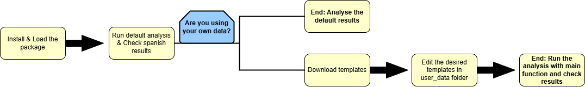

Workflow Guide: Step-by-Step
This guide explains the workflow for using the herdr
model, from exploring the default reference datasets to introducing and
analysing your own Tier 2 custom scenarios.

1. Preliminary Analysis: Default National Data
herdr includes default datasets based on national averages and emission factors for Spain. These allow you to run the model immediately and obtain a baseline environmental footprint.
Step 1: Run a Quick Analysis
To view the results computed from the internal reference data, simply
load the package and run the main function
generate_impact_assessment().
# Load the package
library(herdr)
# Run the complete calculation using only internal package data
reporte_base <- generate_impact_assessment(
group_by_identification = FALSE
)
# Display key impact columns
head(reporte_base)📊 Understanding the Output
The table returned by generate_impact_assessment() contains consolidated results for emissions and land use.
| Column | Description | Unit |
|---|---|---|
Emissions_CH4_enteric |
Methane from enteric fermentation | kg CH₄/year |
Emissions_CH4_manure |
Methane from manure management | kg CH₄/year |
Emissions_N2O_direct |
Direct nitrous oxide from manure | kg N₂O/year |
Land_use_m2 |
Land area required for feed production | m²/year |
II. Customisation: Using Your Own Data (Tier 2)
For specific systems or Tier 2 calculations, you can edit the input data to reflect your real case study.
📥 Step 2: Download the Templates
Use download_templates() to generate the folder structure and obtain the editable CSV files.
# This function creates the folder 'user_data/' in your working directory
download_templates()📝 Step 3: Edit the Key Input Files
The model automatically reads any CSV files inside user_data/.
| File | What to Modify | Importance |
|---|---|---|
census.csv |
Animal population per group and zone. |
High |
categories.csv |
Performance (milk yield, body weight, grazing) and
diet_tag. |
High |
diet.csv / ingredients.csv
|
Diet composition (forage/concentrate, digestibility). | Medium/High |
coefficients.csv, etc. |
Scientific/IPCC factors. Modify only if local studies are available. | Low/Experts only |
III. Running Custom Scenario Analysis
Once you save your edited files into user_data/, the model will automatically use them in the next run.
⚙️ Step 4: Run the Model with Your Own Data
# Run the model using the customised data inside /user_data
resultados_personalizados <- generate_impact_assessment(
saveoutput = TRUE,
group_by_identification = TRUE
)
# Example: filter results by zone (if census.csv includes zones)
resultados_zona_A <- generate_impact_assessment(zone = "Zone_A")